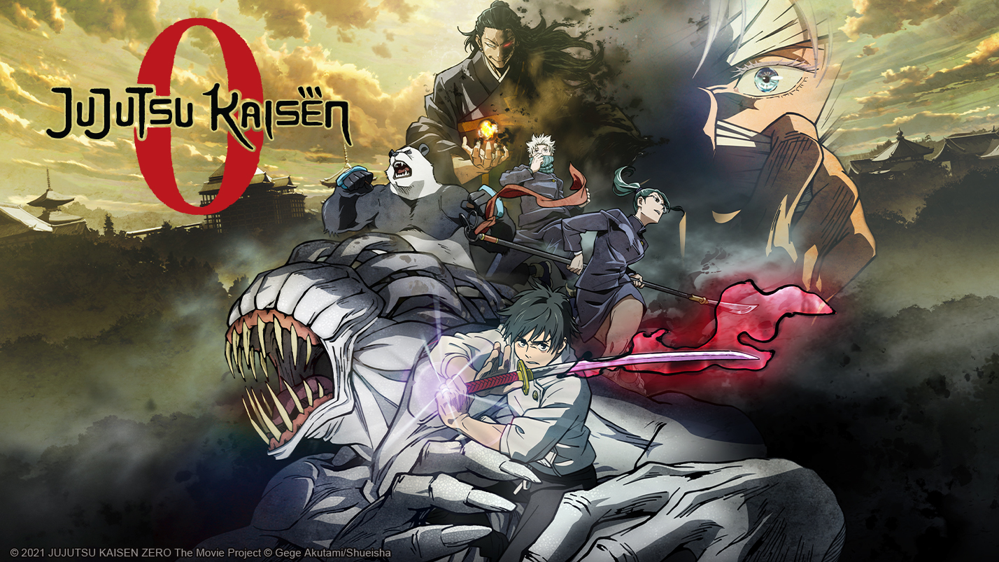

Favorites
- Favorite NBA Team: Brooklyn Nets
- Favorite TV Show: Amphibia(Disney Channel)
- Favorite Anime: Jujutsu Kaisen
- Favorite Video Game: NBA2K
- Favorite Song #1: Who's Next(Inspired by Jujutsu Kaisen) by Divide Music
- Favorite Song #2: Reality(Inspired by Sword Art Online) by Divide Music & AmaLee
- Favorite Movie: Jujustsu Kaisen 0 
- Enjoy watching the Brooklyn Nets taking on the LA Lakers from this Season with Cam Thomas leading the Nets to win!
- Enjoy this awesome clip from Amphibia; animation, music, background, and all!

Return to Menu
Return to Menu
- Come listen to this Gojo Inspired Song!
- Come listen to this beautiful song!